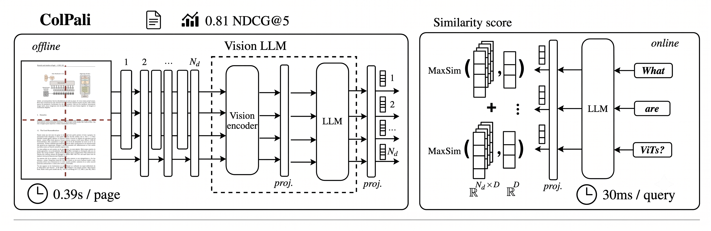

Multivectors for Late Interaction Models
1. Introduction
Most vector search systems reduce a document to a single point in space. It's a convenient design, one embedding per chunk, one comparison per query, and for a long time it was good enough. But convenience comes at a cost. Squeezing an entire document into one vector means squeezing away detail, and the moment a query cares about that detail, retrieval quality quietly breaks down.
Late interaction models exist to fix exactly this problem. Instead of comparing one summary vector against another, they compare a document at the resolution it was actually written in: token by token. This post walks through why single-vector search falls short, how late interaction and ColBERT's MaxSim solve it, how to make that approach practical at scale, and how the same idea extends beyond text into visually rich documents through ColPali.
2. The Problem With a Single Vector
Think about how we've handled documents so far. We compress each chunk, entire content, into a single embedding.

That single vector is a nice summary, but summaries blur detail. If your query mentions two specific terms and the document covers several topics, the single vector for a document might not line up clearly with every part of your query.
For example, sometimes a query spans multiple concepts, like economic policy and renewable energy at the same time, and those concepts might be covered in different parts of a document chunk that we embedded. When we encode that document into a single embedding, the model blends all of its meanings into one vector.
We already know that works, up to a point. But that averaging effect can dilute the specific signals a query is trying to match, especially when the underlying concepts aren't closely related. So even if a document is a great fit for part of a query, it might not get retrieved at all because of this blending.
Cosine similarity makes this concrete. Imagine a query vector and a document vector, each with several dimensions:

A single dimension with a large, opposite-sign value can pull the overall score down, even when most of the other dimensions align well. One bad mismatch buried inside an otherwise strong match is enough to sink the ranking.
3. Late Interaction: Keeping Token Resolution
Late interaction fixes this by keeping the document at token resolution, instead of collapsing it into one vector.
ColBERT is one of the best known late interaction models, so let's take a closer look at how it actually works.

The query encoder generates a small embedding for each token in the query, and the document encoder generates embeddings for each token in the document.
At query time, ColBERT performs the late interaction scoring. It takes every query token embedding and compares it against all of the document's token embeddings, finding the one that's most similar. That's what's called MaxSim. It keeps only the highest score per query token, then sums up all of those scores into what's called the relevance score.
4. Making It Practical: A Two-Stage Pipeline
Checking every query token against every document token is heavier than a single vector lookup. So in practice, this method runs in two stages.
First, we recall a large set of candidate documents quickly using a dense vector, for example 200 documents. Then we rerank those candidates with the interaction model for accuracy, narrowing down to a top final result, for example 10 documents.
In practice this means we end up with two named vectors per point: a standard dense field for fast recall, and a multivector field for the token embeddings, where MaxSim is applied.
Setting It Up in Qdrant
We can call our multivector field colbert, after the model we're using. And we don't need to index this multivector field, because we're only going to use it to rerank candidates, a very small portion of results is ever touched by it.
To populate the multivector field, we need token-level embeddings from a late interaction model, in this case ColBERT. This can be done using FastEmbed with the late interaction text embedding method.
At query time: first, we retrieve 200 points using our dense vector. Then, we rerank those points using ColBERT to get our final top 10 best matches, all in one single request.
5. ColPali: Late Interaction for Visual Documents
For documents with rich layouts, like PDFs, invoices, slide decks, and articles, there's ColPali, which stands for Contextualized Late Interaction over PaliGemma. It applies the same idea as ColBERT, but to vision.

ColPali divides each page into a grid of patches, encodes each patch with a vision-language model, and treats those patch embeddings as sub-vectors. You use the identical multivector configuration, and at query time MaxSim is applied across layout regions instead of text tokens.
6. The Core Idea, In Short
A single vector is a summary of a document. Late interaction is per-token matching. Each query token contributes its best similarity to the document, and the sum of those contributions is the relevance score.
A great way to take advantage of this at scale is to run it in two stages: fast recall with a dense vector, then precise reranking with multivectors and late interaction.
7. Conclusion
Single-vector search will always trade away detail for convenience. That trade-off is fine until a query needs precision that a blended, averaged embedding simply can't offer. Late interaction models like ColBERT close that gap by keeping documents at token resolution and letting each query token find its own best match, rather than forcing everything through one compressed representation.
The two-stage pattern, fast dense recall followed by precise multivector reranking, is what makes this practical rather than just theoretically appealing. It gives you the speed of dense retrieval and the precision of token-level matching, without paying the full cost of exhaustive late interaction across an entire collection.
And with ColPali, the same idea stops being text-only. Treating a page as a grid of visual patches means layout-heavy documents, PDFs, slide decks, invoices, can be searched with the same rigor as plain text. Multivectors, in the end, aren't a niche trick. They're what search looks like when it stops summarizing and starts actually reading.